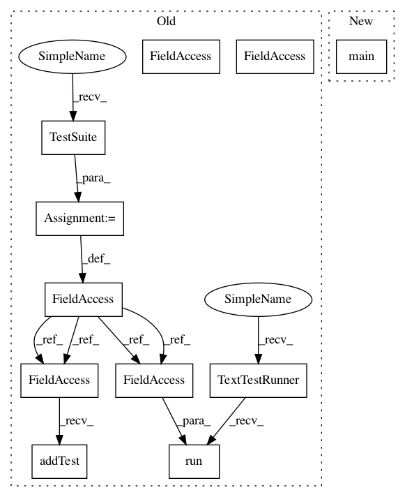

3e543c93d472ab2a786500e3dc03d71a9ab8c044,coremltools/converters/tensorflow/test/test_convnets.py,,,#,1490
Before Change
if __name__ == "__main__":
// unittest.main()
suite = unittest.TestSuite()
suite.addTest(TFSingleLayerTest("test_slice_issue_304"))
unittest.TextTestRunner().run(suite)
After Change
if __name__ == "__main__":
unittest.main()
// suite = unittest.TestSuite()
// suite.addTest(TFSingleLayerTest("test_slice_issue_304"))
// unittest.TextTestRunner().run(suite)
In pattern: SUPERPATTERN
Frequency: 4
Non-data size: 11
Instances
Project Name: apple/coremltools
Commit Name: 3e543c93d472ab2a786500e3dc03d71a9ab8c044
Time: 2019-12-19
Author: bhushansonawane@Bhushans-MacBook-Pro.local
File Name: coremltools/converters/tensorflow/test/test_convnets.py
Class Name:
Method Name:
Project Name: apple/coremltools
Commit Name: 3e543c93d472ab2a786500e3dc03d71a9ab8c044
Time: 2019-12-19
Author: bhushansonawane@Bhushans-MacBook-Pro.local
File Name: coremltools/converters/tensorflow/test/test_convnets.py
Class Name:
Method Name:
Project Name: apple/coremltools
Commit Name: 7904a22259ad9e239be98c352ab1097cd198c028
Time: 2019-06-14
Author: yuduo@apple.com
File Name: coremltools/converters/tensorflow/test/test_convnets.py
Class Name:
Method Name:
Project Name: apple/coremltools
Commit Name: 136ec38a96a5dcc7343a3859932b8b3c1534a904
Time: 2019-11-12
Author: bsonawane@apple.com
File Name: coremltools/converters/tensorflow/test/test_tf_graphs.py
Class Name:
Method Name:
Project Name: apple/coremltools
Commit Name: 7904a22259ad9e239be98c352ab1097cd198c028
Time: 2019-06-14
Author: yuduo@apple.com
File Name: coremltools/converters/tensorflow/test/test_tf_graphs.py
Class Name:
Method Name: